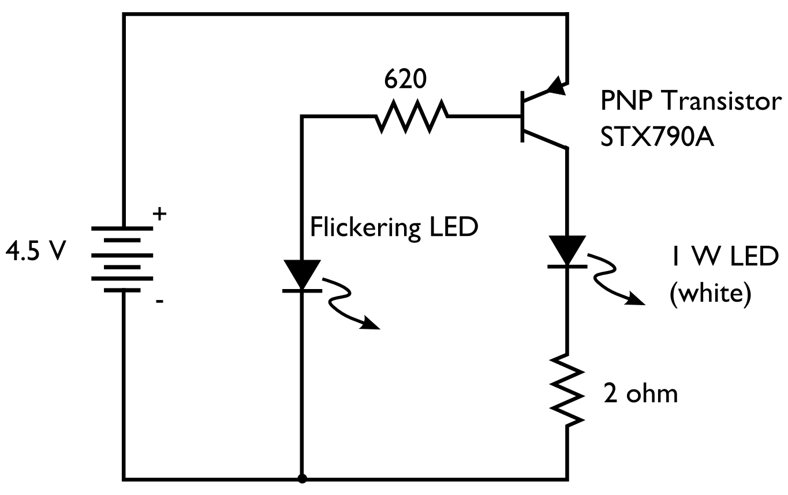
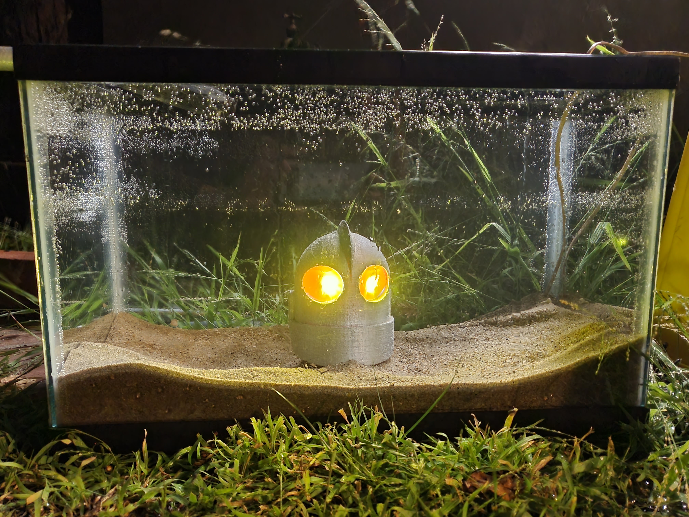
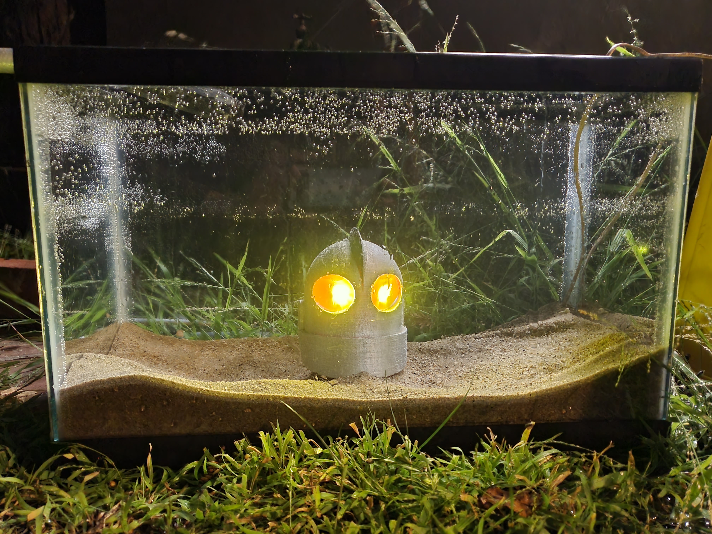

Sunken Hope
Sunken Hope explores the ending of The Iron Giant film where the robot best friend of the child main character ends up in pieces after sacrificing himself and his head lands on ice and is trying to reassemble himself. However if that ice wasn’t there due to global warming then his head would fall to the bottom of the ocean where it would get damaged and wouldn’t be able to reassemble himself.
I recreated this scene using 3D printing and electronics, here's the 3d print before and after removing all the support material.


The electronics follow this schematic, which use a tea light candle’s flickering LED to cause the brighter LEDs I use in the eyes to flicker as well.
Next I tested the circuit on a breadboard using bright LEDs to use in the eyes.
After getting the LEDs working I tested them in the water and then used head shrink and hot glue to make them waterproof.
Then I assembled the electronics on a pcb and added a speaker which beeps in sync with the LED flicker.

After that I test fitted the electronics in the head and then spray painted it.


Then I assembled the electronics inside and used a thin yellow 3d printed film for the eyes.

Here I glued the head to a piece of acrylic and test everything underwater where I have to weigh it down with bricks, but eventually can weigh it down with the sand.
 

Finally here it is at the gallery showing followed by a video of it in action.